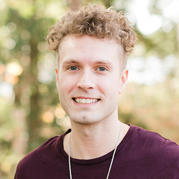

Josh is a creative visual communication and design student at San Francisco State University. He is a junior and is getting excited to graduate as the finish line draws closer. When he graduates, he plans to apply to jobs in other cities, and he would love to move to New York City one day. As an East Coast transplant, he misses some aspects and would like to move back. Josh has a focus on interactive design, and wants to work in user interface design for apps, software, websites, etc. While this is his focus in school, he loves to express himself creatively through other disciplines, and enjoys drawing, painting, and playing piano.
He recently has begun to explore game and level design, experimenting with the Unreal Engine 5.2. While he is not particularly focused on ending up in game design, he finds it enjoyable to learn, and wouldn’t say no to a job in the industry. He has always been a gamer at heart, and has tried to keep up with the hobby over the years when he has free time. He loves the social aspect of gaming, allowing him to keep up with his friends in different time zones while doing something together, but he also loves a good story-driven game too.
He also loves to be outside in the sun and nature, and recently has begun growing a collection of specific succulents with a very particular color palette. He loves cooler, pastel colors and has been searching for cute succulents that are a mix of light blue, light purple, light pink, and aquamarine. While he is new to it and has had some struggling plants drop leaves, he loves the new hobby and particularly enjoys designing the setup and space of his little “gardens”. He also enjoys going out to different parks, conservatories, and nurseries to see new plants. Please use the navigation controls at the top of the page and enjoy! :)
